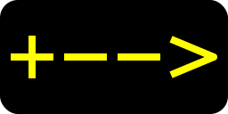

 Skipole WSGI generator.
This is a development server used to test a number of projects which are still being built.
The links to the left take you to areas on this server which serve each project - apart from the link to 'Skipole' which takes you to github.
A test site for a remote controlled telescope.
This is a site which provides prompts for physical exercises.
A site where tests for the skipole framework are being run.
These projects are built using the 'skipole' python web framework, the github site has further information.